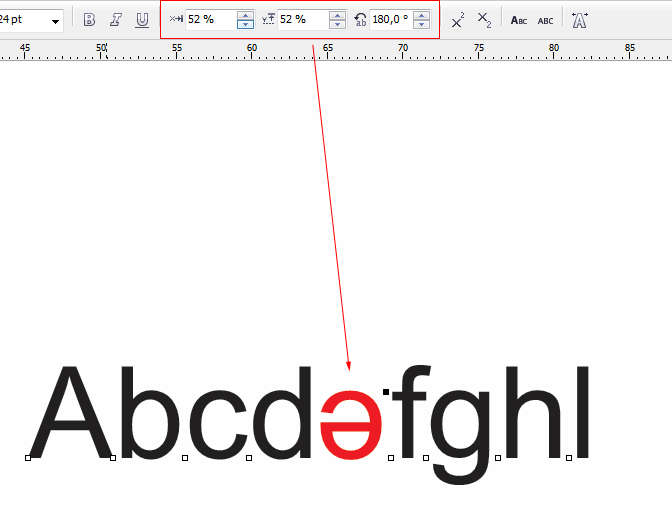

Text Replacer - GREP в CorelDRAW
Sancho / 15.03.2010, 00:41/16:54
Форум:
На днях разморозил разработку макроса Text Replacer.
Итак, для чего же этот макрос?
Этот макрос предназначен не просто для поиска и замены текста.
1. Поиск/замена с использованием GREP (Регулярные выражения)
2. Неограниченное кол-во списков замен.
Одним кликом можно выполнить десятки замен.
3. Поиск/замена форматирования.
Совместимость: 11, 12, X3, X4, X5.
А вот маленький пример как он работает.
Для просмотра анимации нажмите на картинку:
$img2$
Клиент присылает перечень авто, выглядит он следующим образом:
TOYOTA IPSUM 2002, TOYOTA NADIA 1999, TOYOTA MARK 2 QUALIS 2000, TOYOTA CALDINA 1998, TOYOTA CALDINA 2003, TOYOTA CARINA 2001... и т.д.
А в итоговом макете должно быть в несколько колонок и каждое авто на новой строчке, первое слово должно быть выделено жирным. А так же нужно добавить в конце каждого года "г."
Получается, нужно:
1. заменить запятую и пробел на знак конца абзаца и попутно добавить букву "г" с точкой после года.
2. сделать каждое первое слово в абзацах жирным.
С помощью макроса это делается в считанные секунды с помощью след масок:
найти / заменить на
1. "(\d{4}),\s" / "$1 г.\r"
2. "^(\w+)" / "$1" + bold параметр
Быстро и просто, вместо нудного редактирования руками!
Найти и заменить, только с такими функциями:
Чтоб переворачивал или смещал буквы, а так же расстояния между буквами, с лева и с права. (С учетом размера шрифта).

При наборе текста возникает еще одна необходимость.
Присылают текс набранный латиницей, а юникод частично не соответствует, и между буквами появляются кириллические буквы, например: в место üz написано яz, было бы не плохо если бы макрос мог закрашивать выбранные буквы в определенный цвет.
Это облегчит коррекцию!
Поезжай в Канаду, устройся в фирму Corel и задай им там жару!
(Хоть работать научаться)
А чё толку от международного рынка? Например Префлайт там вообще почти не берут.
Страницы